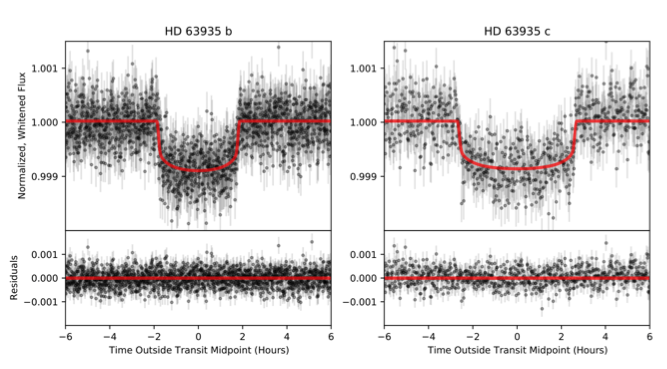
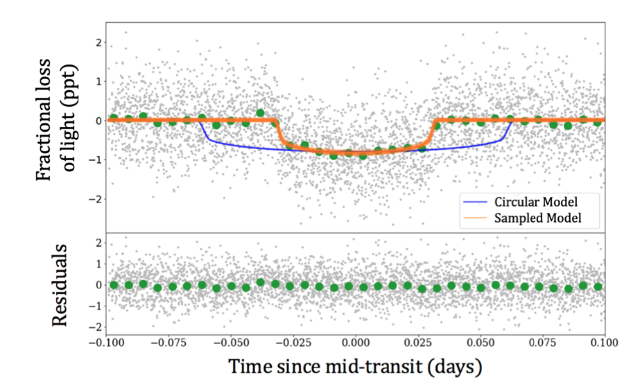
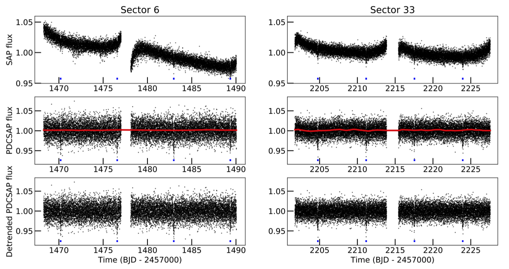

STATUS UPDATE: There will be a TESS splinter session at AAS #239 see here for details.
Welcome TESS followers! This week we are looking at three papers from the archive,
TKS V. Twin sub-Neptunes Transiting the Nearby G Star HD 63935 (Scarsdale et. al., 2021) :
Two almost identically size sub-Neptune transiting planets were discovered using data from TESS, Keck HIRES, and Lick APF. The planets orbit the bright 8.6 V-band magnitude star HD 63935, which is Sun like in nature and has an effective temperature of 5560 K.
The first planet was identified by TESS in Sectors 7 and 34. Known as HD 63935 b (TOI-509.01), the planet has a period of 9.06 days, a radius of 2.99 R⊕, and a mass of 10.8 M⊕. The second planet was identified during the authors follow up campaign of the system using Keck HIRES and Lick APF radial velocity data. HD 63935 c has a period of 21.4 days, a radius of 2.9 R⊕, and a mass of 11.1 M⊕. This planet was also confirmed using TESS Sector 34 photometry.
The TESS-Keck Survey. VI. Two Eccentric sub-Neptunes Orbiting HIP-97166 (Mason et. al., 2021) :
While conducting a search of TESS Objects of Interest for planets with eccentric orbits, the authors of this paper discovered HIP-97166b (TOI-1255b), a sub-Neptune planet transiting its host star. The orbit of the planet is 10.3 days, with the host being a K0 dwarf located 68 pc from Earth.
HIP-97166b was confirmed using ground-based radial velocity measurements from which as mass of 20 M⨁ and radius of 2.7 R⨁ were derived. An additional non-transiting exoplanet, HIP-97166c, was also discovered with an orbit of 16.8 days and a mass of 10 M⨁.
Although the short transit duration of the inner planet might suggest a high eccentricity, a joint RV-photometry analysis revealed a high impact parameter b=0.84±0.03 and a moderate eccentricity. By modeling the dynamics of the system with the condition that it must remain stable over > 105 orbits, eccentricity constraints of 0.16 and <0.25 for planets b and c respectively. See this fascinating paper for more information about the system.
TOI-530b: A giant planet transiting an M dwarf detected by TESS (Gan et. al., 2021) :
TESS data was used to discover a giant planet transiting an M0.5V dwarf star know as TOI-530 which is located 147.7 pc away with a radius of 0.54 R⊙ and a mass of 0.53 M⊙.
The planet, TOI-530b, was verified using ground-based multi-wavelength photometry, high resolution spectroscopy from SPIRou, and high-angular-resolution imaging. The radius of the planet is 0.83 RJ, with a mass of 0.4 MJ, and an orbit of 6.39 days.
The host star has a V-band magnitude of 15.4, which means that TOI-530b orbits one of the faintest stars accessible by ground-based spectroscopy. TOI-530b is also one of only six known transiting giant planets hosted by an M-type star, which is predicted to be a rare occurrence according to core accretion theory.

Fig. 1: Taken from Scarsdale et. al., (2021). Phase-folded transits of HD 63935 b and c. The normalized PDSCAP flux is shown in grey. Our best fit transit model is shown in red. Residuals from each fit are plotted in the lower panels.

Fig. 2: Taken from Mason et. al., (2021). Top: Transit models (orange; 50 samples) drawn from parameter posterior distributions fit from phase-folded TESS photometry of HIP-97166b. A simulated transit curve (blue) is shown for a theoretical circular orbit of HIP-97166b, modeled using median posterior distribution values for all other parameters. Details regarding fitting procedure are discussed in §2.2 of the paper. Bottom: Residuals to our maximum a posteriori model.

Fig. 3: Taken from Gan et. al., (2021). Top panels: The original TESS SAP light curves of TOI-530 from Sector 6 and 33. Middle panels: The PDCSAP light curves of TOI-530 along with the best-fit GP model shown as red solid lines. Bottom panels: The detrended PDCSAP light curves. The transits of TOI-530b are marked in blue ticks.